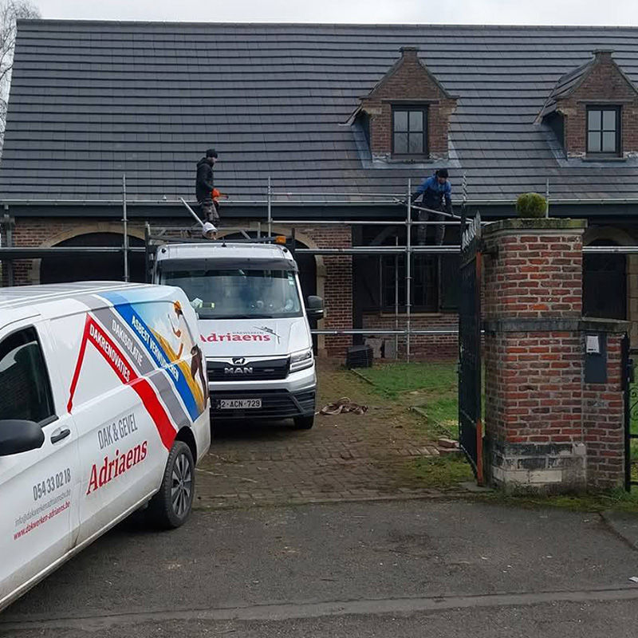
01
Platte en hellende daken
Nieuw gelegd met EPDM of roofing, of met pannen, leien en sandwichpanelen.
- EPDM
- Roofing
- Pannen
- Leien
Ninove · Pamelstraat-Oost
Platte en hellende daken, renovatie, isolatie en zinkwerk. Met erkende asbestverwijdering erbij, zodat alles bij één ploeg blijft. Al sinds 1984 in de bouw.
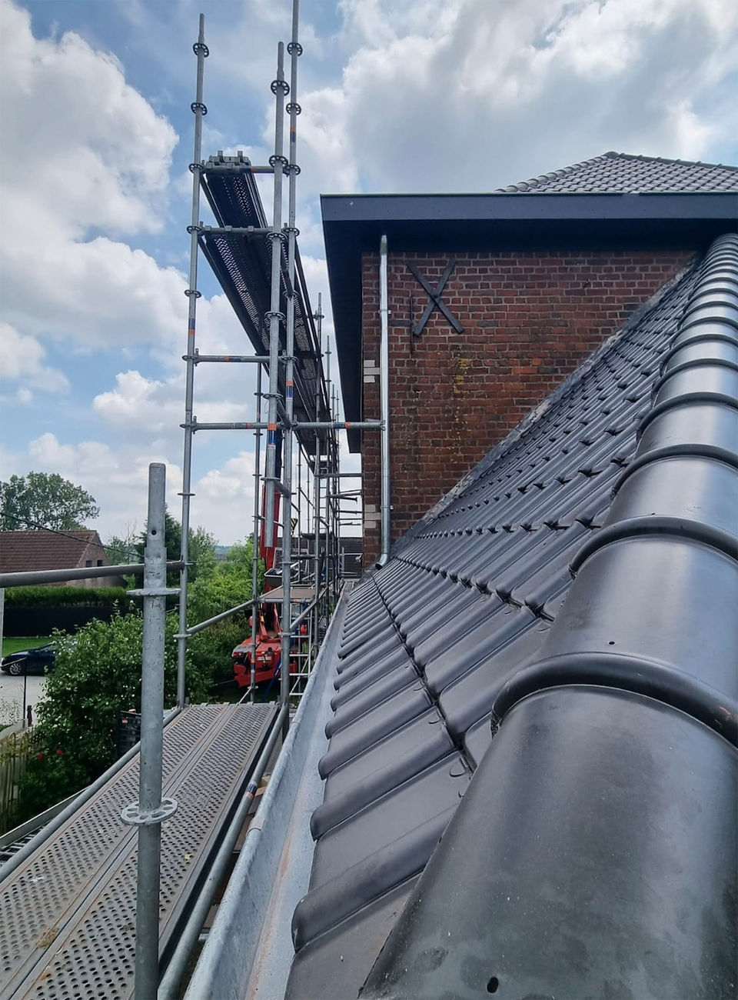
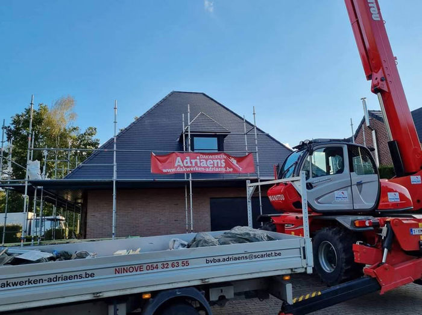
We komen kijken, geven eerlijk advies en zeggen welk materiaal past bij jouw dak.

Nieuw gelegd met EPDM of roofing, of met pannen, leien en sandwichpanelen.
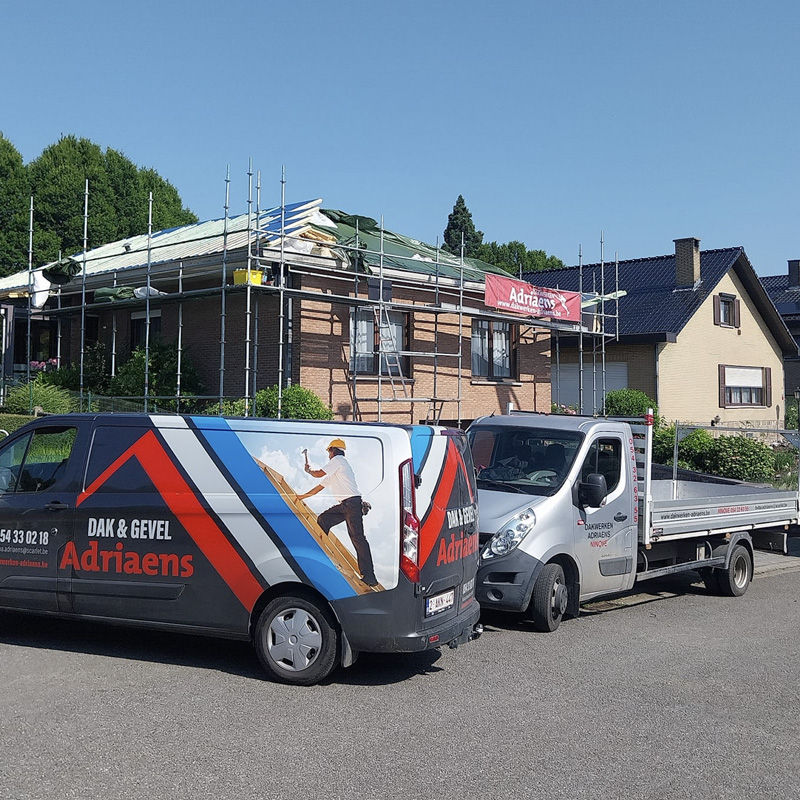
Nieuw onderdak, nieuwe dakbedekking en nieuwe isolatie. Je dak gaat weer jaren mee, met minder onderhoud.
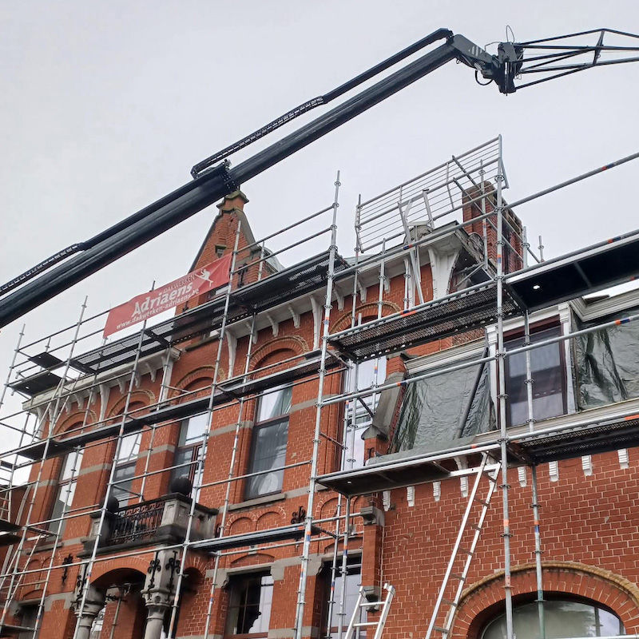
Een lek, weggewaaide pannen, rotte panlatten of een gescheurde dakbedekking. We zoeken een oplossing die blijft.
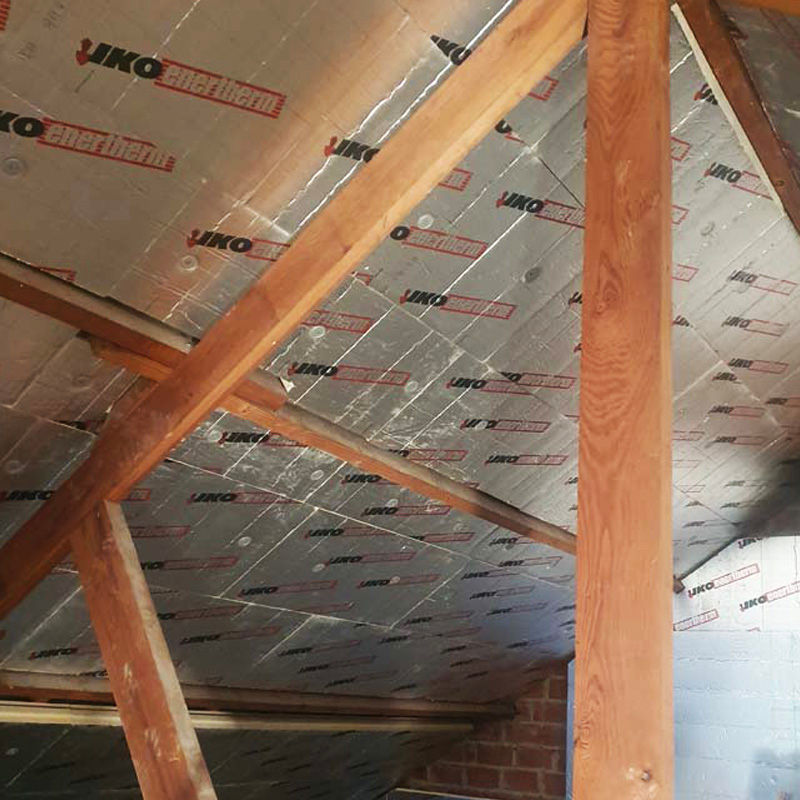
Dakisolatie met glas- of rotswol, PUR, PIR of ecologisch. Gevels bekleed met leien of metaal.
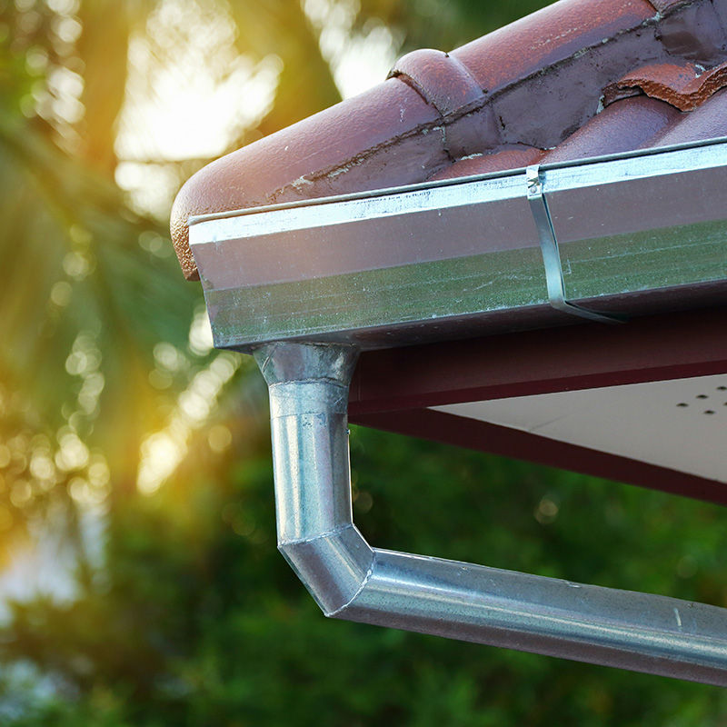
Zinken dakranden, dakkapellen en schouwaansluitingen. Goten en afvoeren die het water echt wegkrijgen.
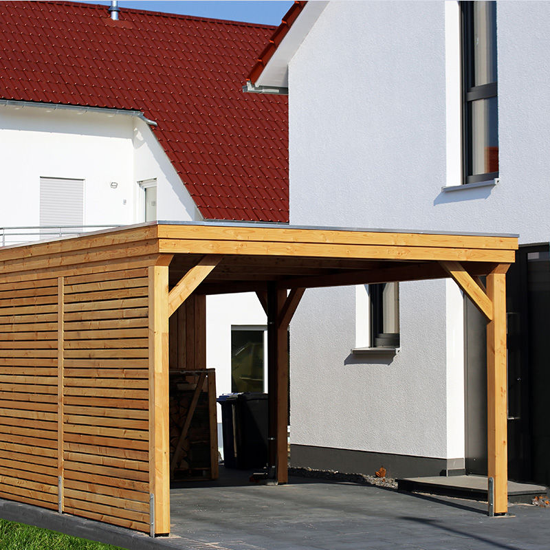
Terrasoverkappingen, carports en afdaken. Ook loodsen en overdekte opslag voor bedrijven.
Tot midden jaren negentig zat asbest in leien, golfplaten en onderdakplaten. Is je dak beschadigd of wil je zonnepanelen leggen, dan moet het eerst weg. Bij ons gebeurt dat door dezelfde ploeg die daarna je nieuwe dak legt.
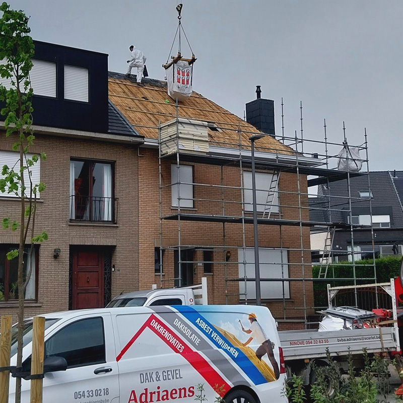
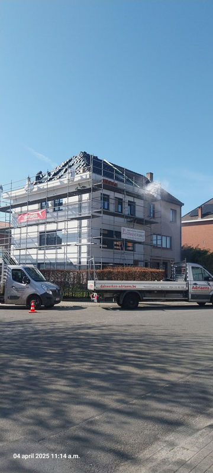
Een paar werven van de voorbije jaren. Tik op een foto om ze groot te zien.
Volledige dakrenovatie met isolatie, nieuwe leien en asbestverwijdering.

Iemand van de ploeg bekijkt je dak en stelt de juiste aanpak voor.
Welk materiaal, welke isolatie, en wat er echt nodig is.
Een gedetailleerde, vrijblijvende offerte, met een timing erbij.
De ploeg gaat aan de slag zoals afgesproken, en ruimt de werf netjes op.
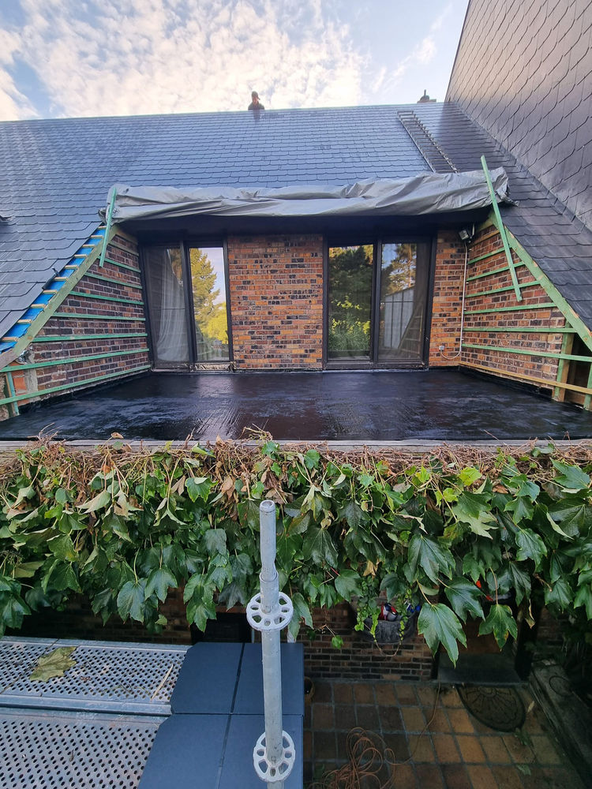
Adriaens is al sinds 1984 actief in de bouw, en heeft ruim 25 jaar ervaring in dakwerken. In de reviews lees je vaak dezelfde woorden terug: correct, vriendelijk, en afspraak is afspraak.
Vandaag werkt Patrick Adriaens met een ploeg van ervaren mensen, voor particulieren en voor bedrijven.
Nieuw dak met Patrick Adriaens. Super mooie afwerking. Vriendelijke mensen, alles zoals het hoort.
Top firma Adriaens. Zeer betrouwbaar en komt alle afspraken na.
Zeer betrouwbare firma Dakwerken Adriaens Dak en Gevel uit Ninove, correct in uitvoering, correcte prijzen.
Ja. Ligt er nog asbest op je dak, dan moet dat eerst verwijderd worden. Wij halen het weg en leggen meteen het nieuwe dak, zodat je maar één ploeg over de vloer hebt.
Bel 0473 29 15 70. Bij dakschade kan je rekenen op een snelle interventie, dag en nacht.
Ja, en vrijblijvend. Je krijgt een gedetailleerde offerte met de materialen en een timing.
Dat hangt af van het soort dak. We werken met glas- en rotswol, PUR en PIR, en ecologische isolatie zoals cellulose en houtwol. Bij het plaatsbezoek zeggen we wat bij jouw dak past.
Ja. Vooral in Ninove, Halle, Herzele en Lede, maar ook verder in Oost-Vlaanderen en Vlaams-Brabant.
We nemen snel contact op om langs te komen. Dringend? Bel dan meteen.
DIEen woordje uitleg van Stijn
Ik maakte deze demo voor jullie om te tonen wat er kan. Na een kort gesprek maak ik er iets veel persoonlijkers van, helemaal naar jullie wens.
Vrijblijvend. Ik kom langs of we bellen.
Op maat, op jullie eigen domein.
Geen voorschot. Jullie betalen pas als alles klaar is.
Hosting, domeinnaam en kleine wijzigingen, zoals nieuwe openingsuren.
Omdat een voorbeeld meer zegt dan een mail. Zo zien jullie meteen wat er kan, en het kost jullie niets.
Nee. Het gesprek is vrijblijvend. Vinden jullie het niks, dan is het daarmee gedaan.
Na ons gesprek staat jullie site binnen 10 tot 14 dagen online.
Zeker. Jullie domeinnaam kan gewoon blijven, de nieuwe site komt in de plaats van de oude.
Nee, dat doe ik op basis van ons gesprek. Eigen foto's zijn mooi meegenomen, maar niet nodig om te starten.